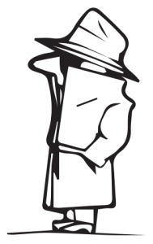
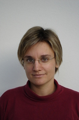
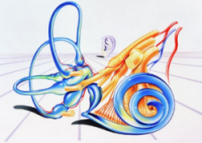
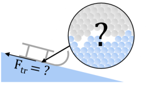
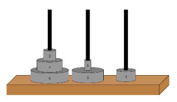
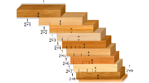
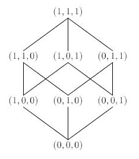

Dogodek je sofinanciran s strani projekta “Evropska noč raziskovalcev – Humanistika, to si ti!”
O vikendu

Mafijski vikend je zimska šola matematike in fizike, namenjena dijakom vseh letnikov, ki poteka vsako leto
v vikendu konec januarja.
Dijaki se v času enega vikenda udeležijo dveh poljudnih predavanj iz matematike in fizike, dveh matematičnih
ali fizikalnih delavnic ter se družijo z vrstniki in zaposlenimi na Fakulteti za matematiko in fiziko.
Vikend poteka v sproščenem vzdušju in je odlična priložnost za to, da dijaki bolje spoznajo, kaj matematika in fizika
na univerzitetni ravni sploh sta, da študente in aktivne raziskovalce povprašajo o študiju in raziskavah, ali pa
da en vikend preživijo z vrstniki s podobnimi interesi.
Okvirni program Mafijskega vikenda 2020 je:
Petek, 24. 1. 2020 od 17h–21h: Poljudni predavanji, večerja. Sobota, 25. 1. 2020 od 9h–13h: Delavnice po skupinah, kosilo. Sobota, 25. 1. 2020 od 15h–20h: Družabno popoldne, večerja. Nedelja, 26. 1. 2020 od 9h–13h: Delavnice po skupinah, kosilo.
Podroben program je na voljo na zavihku Program. Kotizacija
za vikend znaša 20 € in pokriva približno stroške prehrane, ostalo krije fakulteta.
Na vikend se prijavite tukaj, za vsa dodatna vprašanja pa lahko kontaktirate
Jureta Slaka na jure.slak@fmf.uni-lj.si.
Prijava
Na Mafijski vikend 2020 se lahko prijavite s spodnjim obrazcem ali na
tej povezavi.
Po prijavi boste na vpisani email prejeli podatke za plačilo
kotizacije (direktno nakazilo), potrdilo o plačilu kotizacije, pred vikendom pa še bolj podrobna
navodila. Račun za plačilo boste prejeli ob prihodu na vikend.
Program
Mafijski vikend 2020 bo potekal 24., 25. in 26. januarja. Podroben program je na voljo v spodnji tabeli.
Petek, 24. 1. 2020
17:00
Zbor in uvodni nagovor
17:30
Predavanje prof. Barbare Drinovec Drnovšek
18:30
Predavanje prof. Alojza Kodreta
19:30
Predstavitev sobotnih in nedeljskih delavnic*
20:00
Večerja v kavarni Mafija
21:00
Zaključek prvega dne
Sobota, 25. 1. 2020
9:00
Delavnice v manjših skupinah*
12:00
Kosilo v kavarni Mafija in odmor
15:00
Mafijska avantura in večerja
20:00
Zaključek drugega dne
Nedelja, 26. 1. 2020
9:00
Delavnice v manjših skupinah*
12:00
Kosilo v kavarni Mafija in izpolnjevanje anket
13:00
Zaključek Mafijskega vikenda
* V soboto in nedeljo bodo na sporedu iste delavnice. Vsak dijak bo tako lahko izmed šestih ponujenih tem izbral dve.
Opisi delavnic so na voljo na zavihku Delavnice.
Vsebinski del vikenda
Na vikendu bodo dijaki poslušali matematično in fizikalno predavanje (ki sta odprti tudi za splošno javnost), in se udeležili dveh izmed šestih ponujenih delavnic.
Predavanji

Matematično predavanje: Krivulje, ki napolnijo prostor
Predavateljica prof. dr. Barbara Drinovec Drnovšek je redna profesorica na Oddelku za matematiko FMF in raziskovalka na Inštitutu za matematiko, fiziko
in mehaniko. Na fakulteti predava predvsem predmete matematične analize, raziskovalno pa se ukvarja s kompleksno analizo in teorijo minimalnih ploskev.
Fizikalno predavanje: Kaj je čas? Če sploh je.
Predavatelj prof. dr. Alojz Kodre je zaslužni profesor na Oddelku za fiziko FMF. Ukvarja se s fiziko atomov in raziskavami z rentgensko in sinhrotronsko svetlobo. Za
svoje raziskovalno delo je med drugim prejel zlato plaketo Univerze v Ljubljani, pedagoško pa je najbolj poznan kot predavatelj Matematične fizike. V slovenščino je
prevedel več znanstveno-fantastičnih del in del poljudne znanosti, med drugimi Štoparski vodnik po Galaksiji.
Delavnice
Lahko dokažeš, da Zemlja ni ploščata? (Simon Čopar)
Že antičnim učenjakom je bilo znano, da je zemlja okrogla,
Eratosten pa je premer Zemlje že določil s presenetljivo
natančnostjo. Da to dejstvo lahko privzamemo za samoumevno,
se moramo zahvaliti stoletjem dognanj, ne samo v razumevanju
sveta okoli nas, ampak tudi v osnovnih principih znanosti -
sklepanja, iskanja predpostavk ter preverjanja hipotez. Postavili
se bomo v vlogo znanstvenika, ki se prvič sooči z vprašanjem, ali je Zemlja plošča ali krogla,
ter na podlagi vsakdanjih opažanj in splošnega znanja poskusili priti do pravilnega
odgovora. Oboroženi z metodami znanstvenega raziskovanja bomo pod drobnogled vzeli
tudi trditve o ploščati Zemlji, ki se v določenih krogih še vedno pojavljajo, ter poskusili najti
srž problema.

Od vzmetnega nihala do notranjega ušesa (Gregor Brumec in Domen Govekar)
Kakor je za vsakega od nas značilna določena barva oči, je za
vsako vzmetno nihalo značilna njegova lastna frekvenca. Vzmetno
nihalo ima le eno, na delavnici pa bomo spoznavali nihala, ki so
sestavljena iz dveh ali več teles, zaradi česar imajo tudi več lastnih
nihajnih načinov. S svojim znanjem bomo nato skušali razložiti
delovanje zanimivega dela človeškega ušesa – koščenega polža.

Zakaj nam na ledu drsi? (Marion van Midden)
Trenje je tako zelo prisotno v našem življenju, da o njem niti
ne razmišljamo preveč. Ampak, ali ste se kdaj vprašali, kaj
trenje sploh je? Katere interakcije na nivoju atomov so
odgovorne za to, da nam na ledu drsi, na betonu pa ne? Na
delavnici bomo prek različnih eksperimentov iskali odgovore
na ta in podobna vprašanja ter poskusili razložiti, kaj se v
različnih primerih dogaja na mikroskopskem nivoju.

Hanojski stolpi (Eva Zmazek)
Klasični problem Hanojskega stolpa je igra, ki vsebuje k nosilcev
in n diskov s paroma različnimi polmeri. Na začetku igre so vsi
diski na začetnem nosilcu, razvrščeni od največjega do
najmanjšega. Cilj igre je prestaviti stolp diskov iz začetnega
nosilca na končni nosilec s čim manjšim številom korakov, pri
čemer lahko prestavimo le en disk naenkrat in večjega diska
nikoli ne smemo postaviti na manjšega. Na delavnici bomo
poiskali algoritem za rešitev tega problema in si ogledali njemu prirejene posplošene probleme.

Neskončne vrste (Grega Saksida)
(Neskončne) vrste so vsote z neskončnim številom
seštevancev. Na prvo žogo se zdi, da se obnašajo kot
navadne vsote, a temu ni tako. Vrste imajo številne
nenavadne in nadvse zanimive lastnosti, ki jih končne vsote
nimajo. Povsem na mestu je že vprašanje, če neka vrsta
sploh obstaja. Ali se 1 + 1/2 + 1/4 + ... sešteje v katero število ali pa je rezultat
takšnega seštevanja neskončnost? Se 1 + 2 + 3 + ... res sešteje v -1/12? Je pri
računanju z neskončnimi vrstami vrstni red seštevanja še vedno nepomemben? Na delavnici
bomo odgovorili na ta in druga vprašanja. Odkrili bomo tudi povezave med vrstami in funkcijami
ter celo, kje lahko v vsem tem najdemo posebno vrsto skalarnega produkta.

Urejanje množic (Lara Vukšić)
Vsi vemo, kako lahko uredimo naravna števila, nekaj več razmisleka
pa je potrebnega že, če hočemo urediti npr. pare naravnih števil. Ali
lahko poljubne množice uredimo na smiseln način in kaj sploh pomeni
smiseln način? Na delavnici se bomo najprej seznanili z matematično
definicijo pojma urejenosti. Različne tipe urejenosti bomo ponazorili s
primeri urejenih množic, nato pa se bomo podrobneje posvetili dobro
urejenim množicam. Spoznali bomo ordinalna števila, s pomočjo
katerih bomo videli, da lahko enako velike neskončne množice
uredimo na različne načine. Če nam bo ostalo dovolj časa, bomo
spoznali aksiom o dobri urejenosti in aksiom izbire ter dokazali njuno
ekvivalentnost.
Lokacija
Mafijski vikend poteka na Fakulteti za matematiko in fiziko v Ljubljani, v stavbi matematike:
Deloma poteka tudi v kavarni Mafija, na istem naslovu:
Fakulteta za matematiko in fiziko
Jadranska ulica 21
1000 Ljubljana
Če se pripeljete z vlakom ali avtobusom, lahko za pot od glavne postaje do fakultete uporabite Ljubljanski potniški promet: linija št. 1, smer: Mestni log, postajališče Jadranska,
blizu pa ustavlja tudi linija 6 (postajališče Hajdrihova). Za uporabo mestnih avtobusov potrebujete kartico Urbana. V času vikenda bo na voljo tudi parkiranje pred fakulteto.